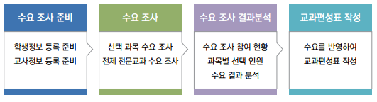

수요조사 및 수강신청
수요조사
수강 신청 전에 학생들의 과목 선호도를 교육과정에 반영하기 위하여 사전 수요 조사를 실시함.
수요 조사는 학교에서 선정한 선택 과목에 대한 수요 조사와 전체 전문교과에 대한 수요 조사로 나뉘는데 학생 중심 교육과정 운영을 위해서는 전체 전문교과에 대한 학생의 수요를 파악하여 교과편성에 반영하는 노력이 필요함.
수강신청
교육과정이 구성되면 학생들에게 교육과정의 인력양성 유형 및 선택 과목에 대한 설명이 필수로 진행되어야 하며, 학부모에 대한 교육도 같이 진행함. 충분한 안내 이후에 학업 계획서를 작성하고 학업 계획서를 기준으로 수강 신청을 진행함.
학생들의 1차 수강 신청 내역을 확인하여 과목 쏠림, 수강 인원 부족, 수업 가능 여부 등을 확인하여 학생들에게 충분히 고지한 이후 2차 수강 신청을 진행해야 하며, 적정인원이 구성될 때까지 수강 신청을 재차 진행함. 사전에 증설이 어려운 과목이나 최소 인원수에 대한 기준이 마련되어 있으면 수강 신청의 차수가 줄어들 수 있음.